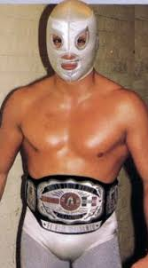
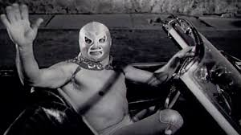
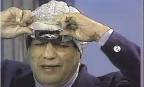

Nombre real: Rodolfo Guzmán Huerta
Fecha de nacimiento: 23 de septiembre de 1917
Fallecimiento: 5 de febrero de 1984
Alias: El Santo, El Enmascarado de Plata
Origen: Tulancingo, Hidalgo, México
Comenzó su carrera en 1934 bajo varios nombres, pero fue en 1942 cuando adoptó el icónico personaje de "El Santo". Su imagen de héroe y justicia se volvió legendaria.
Protagonizó más de 50 películas entre 1958 y 1982, donde luchaba contra vampiros, hombres lobo y criminales. Se convirtió en un ícono nacional e internacional.
Ganó múltiples campeonatos nacionales e internacionales. Fue una figura central en el crecimiento de la lucha libre como espectáculo en México.
El Santo jamás se quitó la máscara en público durante su carrera. Solo reveló su rostro una vez en televisión, una semana antes de morir.
Padre de 10 hijos, incluyendo a El Hijo del Santo. Fue un defensor de los valores familiares y un símbolo de justicia popular. Su funeral reunió a miles de personas en la Ciudad de México.